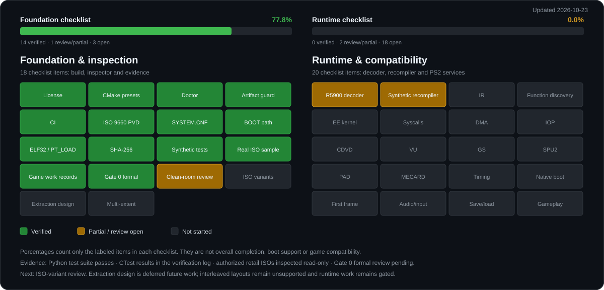

RPTP project
Progress
Early research. These checklists measure implemented and verified scope, not game compatibility or overall completion.

Last updated 2026-10-29
Generated by tools/rptp_progress.py. Raw evidence is tracked in docs/STATE.md.
Foundation & inspection
18 checklist items: build, inspector and evidence.
| Checklist item | Status |
|---|---|
| License | Verified |
| CMake presets | Verified |
| Doctor | Verified |
| Artifact guard | Verified |
| CI | Verified |
| ISO 9660 PVD | Verified |
| SYSTEM.CNF | Verified |
| BOOT path | Verified |
| ELF32 / PT_LOAD | Verified |
| SHA-256 | Verified |
| Synthetic tests | Verified |
| Real ISO sample | Verified |
| Game work records | Verified |
| Gate 0 formal | Verified |
| Clean-room review | Partial / review open |
| ISO variants | Open |
| Extraction design | Open |
| Multi-extent | Open |
Runtime & compatibility
20 checklist items: decoder, recompiler and PS2 services.
| Checklist item | Status |
|---|---|
| R5900 decoder | Partial / review open |
| Synthetic recompiler | Partial / review open |
| IR | Verified |
| Function discovery | Open |
| EE kernel | Open |
| Syscalls | Open |
| DMA | Open |
| IOP | Open |
| CDVD | Open |
| VU | Open |
| GS | Open |
| SPU2 | Open |
| PAD | Open |
| MECARD | Open |
| Timing | Open |
| Native boot | Open |
| First frame | Open |
| Audio/input | Open |
| Save/load | Open |
| Gameplay | Open |
What these numbers mean
- Verified: the item has recorded evidence in docs/STATE.md.
- Partial / review open: technical work exists, but a required review or follow-up is pending.
- Open: no implementation or evidence yet.
- Policy decisions: recorded in the ADRs; they are not counted as verified items.
Percentages count only the labeled items in each checklist. They are not overall completion, boot support or game compatibility.
Evidence snapshot
- The Python test suite passes; CTest and Gate 0 results are recorded in docs/VERIFICATION_LOG.md.
- The current authorized retail sample has been inspected read-only; records are in the game work index. No boot, recompilation or gameplay exists.
- The narrow Gate 0 technical pass is recorded. Independent provenance reviews and the clean-room review of the build/CI/doctor layer remain pending.
- Synthetic scope: 36 instructions are catalogued in docs/INSTRUCTION_CATALOG.md; the percentages above count checklist items, not instructions.
Next bounded work: read-only eight-image census refresh (R-029) when all images are reachable; further increments follow census frequency evidence. Extraction design is deferred under ADR-0004. Interleaved layouts remain unsupported. Gate 3 remains open.